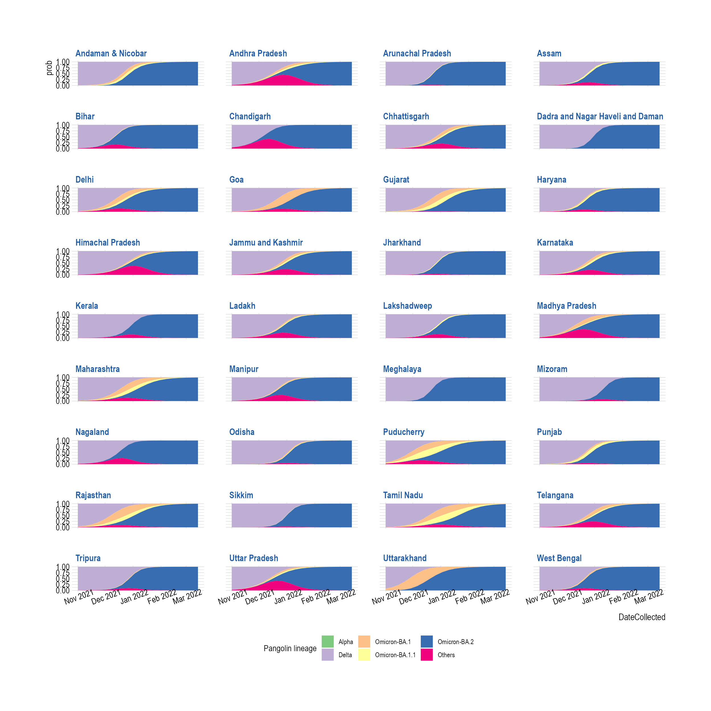

suppressPackageStartupMessages({
library(epicovr)
library(nnet)
library(emmeans)
library(tidyverse)
})
theme_set(EpicovrTheme())
gisaid_india_collapsed <- CollapseLineageToVOCs(
variant_df = gisaid_india,
vocs = vocs,
custom_voc_mapping = custom_voc_mapping,
summarize = FALSE
)
gisaid_india_shared_dateweek <- gisaid_india_collapsed %>%
filter(Host == "Human") %>%
filter(MonthYearCollected >= "Nov 2021") %>%
group_by(DateCollectedNumeric, State, lineage_collapsed) %>%
summarise(total_sequences = n()) %>%
drop_na() %>%
arrange(DateCollectedNumeric, State, lineage_collapsed)## `summarise()` has grouped output by 'DateCollectedNumeric', 'State'. You can
## override using the `.groups` argument.
head(gisaid_india_shared_dateweek)## # A tibble: 6 × 4
## # Groups: DateCollectedNumeric, State [4]
## DateCollectedNumeric State lineage_collapsed total_sequences
## <dbl> <chr> <chr> <int>
## 1 18932 Andhra Pradesh Delta 26
## 2 18932 Andhra Pradesh Others 9
## 3 18932 Assam Delta 3
## 4 18932 Assam Others 1
## 5 18932 Chandigarh Others 1
## 6 18932 Chhattisgarh Delta 1
fit <- multinom(
formula = as.formula("lineage_collapsed ~ State + DateCollectedNumeric"),
data = gisaid_india_shared_dateweek,
weights = gisaid_india_shared_dateweek$total_sequences,
maxit = 1000
)## # weights: 228 (185 variable)
## initial value 94472.309775
## iter 10 value 65576.971506
## iter 20 value 63566.259346
## iter 30 value 62507.097461
## iter 40 value 60022.645959
## iter 50 value 58194.288475
## iter 60 value 55197.479476
## iter 70 value 51557.245571
## iter 80 value 45234.912491
## iter 90 value 42168.248919
## iter 100 value 40883.922255
## iter 110 value 40294.351854
## iter 120 value 39842.171387
## iter 130 value 39499.557036
## iter 140 value 39363.752274
## iter 150 value 39270.708997
## iter 160 value 39227.811043
## iter 170 value 39213.089571
## iter 180 value 39211.255860
## iter 190 value 39209.716064
## final value 39209.628430
## converged
date.from <- min(gisaid_india_shared_dateweek$DateCollectedNumeric)
date.to <- max(gisaid_india_shared_dateweek$DateCollectedNumeric)
fit_india_multi_predsbystate <- data.frame(emmeans(fit,
~lineage_collapsed,
by = c("DateCollectedNumeric", "State"),
at = list(DateCollectedNumeric = seq(date.from, date.to, by = 7)),
mode = "prob", df = NA
))
fit_india_multi_predsbystate$DateCollected <- as.Date(fit_india_multi_predsbystate$DateCollectedNumeric, origin = "1970-01-01")
head(fit_india_multi_predsbystate)## lineage_collapsed DateCollectedNumeric State prob
## 1 Alpha 18932 Andaman & Nicobar 8.495304e-14
## 2 Delta 18932 Andaman & Nicobar 9.957438e-01
## 3 Omicron-BA.1 18932 Andaman & Nicobar 2.870979e-03
## 4 Omicron-BA.1.1 18932 Andaman & Nicobar 1.310175e-03
## 5 Omicron-BA.2 18932 Andaman & Nicobar 7.499924e-05
## 6 Others 18932 Andaman & Nicobar 2.679038e-08
## SE df asymp.LCL asymp.UCL DateCollected
## 1 5.961578e-14 NA -3.189173e-14 2.017978e-13 2021-11-01
## 2 7.671099e-05 NA 9.955935e-01 9.958942e-01 2021-11-01
## 3 5.817258e-05 NA 2.756963e-03 2.984995e-03 2021-11-01
## 4 3.125055e-05 NA 1.248925e-03 1.371425e-03 2021-11-01
## 5 1.330554e-06 NA 7.239140e-05 7.760708e-05 2021-11-01
## 6 5.405045e-10 NA 2.573101e-08 2.784975e-08 2021-11-01Plot Smooth Muller Plots
muller_indiabystate_mfit <- ggplot(
data = fit_india_multi_predsbystate,
aes(x = DateCollected, y = prob, group = lineage_collapsed)
) +
facet_wrap(~State, ncol = 4) +
geom_area(aes(lwd = I(1.2), colour = NULL, fill = lineage_collapsed, group = lineage_collapsed), position = "stack") +
scale_fill_brewer(type = "qual", name = "Pangolin lineage") +
scale_x_date(date_breaks = "1 month", date_labels = "%b %Y")
muller_indiabystate_mfit